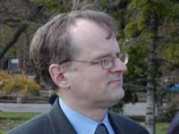
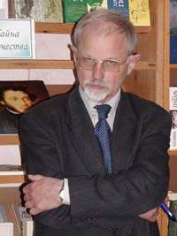
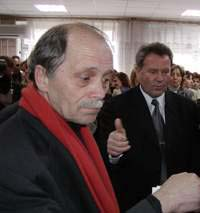
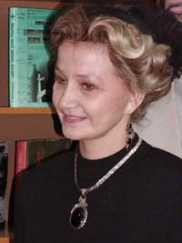

С 11 по 14 апреля в Николаеве находилась делегация Правительства Москвы в ее состав входили:
Щербаченко М.Л. (руководитель делегации), Беликов О.В., Бурцев М.М., Ткач И.П., Ивановский В.А.,
Кожаев Д.Ю., Струве Н.А., Москвин В.А., Нестерова Н.В., Бузник М.Х., Христенко В.Н.
12 апреля с утра делегацию принял Николаевский городской голова В.Д. Чайка,
затем гости приняли
участие в его инаугурации на первом заседании вновь избранного Николаевского городского совета,
побывали на Флотском бульваре, посетили Николаевский Морской порт (директор В.М.Емельянов),
МГТУ им. Адм. С.О. Макарова (ректор Г.Ф. Романовский), приняли участие в акте-передаче 4700
редких книг Центральной городской библиотеки им. Кропивницкого
(директор Л.С. Северин), посетили Николаевский Художественный музей им. В.В. Верещагина.
13 апреля Н.А. Струве
и Н.В. Нестерова посетили Николаевскую обсерваторию (директор д.ф-м.н. Г.И.
Пинигин), а затем вся делегация посетила Национальный историко-археологический
заповедник Ольвию (директор Г.С. Лысикова). Основная часть фотографий, иллюстрирующих пребывание делегации, выполнена
Заслуженным журналистом Украины, лауреатом престижной премии "Золотая фортуна"
признанным мастером Александром Александровичем Кремко, фото в Обсерватории и
Ольвии выполнены любителем А.И. Золотухиным. Ниже приводим перепечатку статьи Натальи Музыки "Дар бесценный", и "Москва! Как много...",
опубликованные в газете "Вечерний Николаев"( http://www.vn.mk.ua) соответственно 16 и 27 апреля 2002 г.: 
КУЛЬТУРНОЕ СОТРУДНИЧЕСТВО.

Н. Струве
В. Москвин


М. Бузник
Н. Нестерова
Архив новостей
Книга "Пушкин и николаевский край"
Юбилей Н. А. Троянова